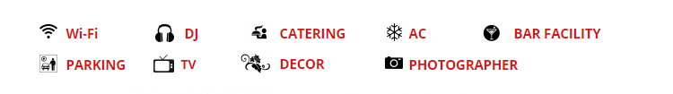
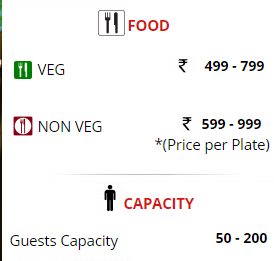

Banquet Halls
Come have a royal wedding at The City Of Pearls with Fairmont bringing to you the finest banquet halls in hyderabad. Fairmont banquet halls hyderabad, will offer you an overwhelming experience in the lap of luxury of the best marriage halls in hyderabad. This city has a lot to offer in terms of tourist attractions like statue of lord buddha and Anjaiah Lumbi Park.

Fairmont King Banquet
Amenities

Overview:
Your Fairmont King Banquet is a fully furnished Banquet Hall in Himayat Nagar, Bangalore area with a capacity of 200 guests and is perfectly suitable for small or large gathering events like Wedding, Reception, Birthday, Ring Ceremony, Anniversary and others.Know Your OYO Banquet:

• This spacious OYO Banquet Hall offers DJ, Air Conditioning, Decorations, Catering, Bar service and a lot more.
• Your hall area includes beautifully adorned tables, sofas, restrooms and support staff for your convenience.
• This Fairmont Banquet hall is easily connected to Narayanguda Flyover, Bangalore for easy transit within the city.
• The Fairmont 24-hour helpdesk (011-3958-9882) is at your disposal to assist you with any query.
• The Banquet Hall has a well-trained team by Fairmont to take care of any issues.